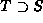
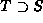
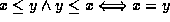
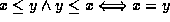
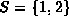
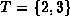
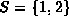
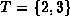
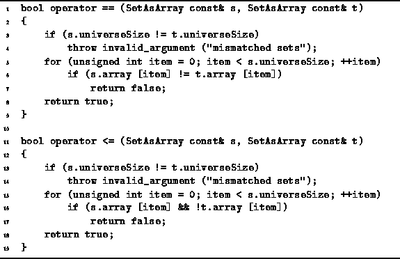

Data Structures and Algorithms
with Object-Oriented Design Patterns in C++
Data Structures and Algorithms
with Object-Oriented Design Patterns in C++
There is a special family of operators for comparing sets.
Consider two sets, say S and T.
We say that S is a subset of T,
written  ,
if every element of S is also an element of T.
If there is at least one element of T that is not also an element of S,
we say that S is a
proper subset of T,
written
,
if every element of S is also an element of T.
If there is at least one element of T that is not also an element of S,
we say that S is a
proper subset of T,
written  .
We can also reverse the order in which the expressions are written
to get  or
.
We can also reverse the order in which the expressions are written
to get  or  ,
which indicates that T is a
(proper) superset
of S.
,
which indicates that T is a
(proper) superset
of S.
The set comparison operators follow the rule that if  and
and  then
then  ,
which is analogous to a similar property of numbers:
.
However, set comparison is unlike numeric comparison in that there
exist sets S and T for which neither
,
which is analogous to a similar property of numbers:
.
However, set comparison is unlike numeric comparison in that there
exist sets S and T for which neither  nor
nor  !
E.g., clearly this is the case for  and .
Mathematically, the relation
!
E.g., clearly this is the case for  and .
Mathematically, the relation  is called
a partial order
because there exist some pairs of sets for which neither
is called
a partial order
because there exist some pairs of sets for which neither  nor
nor  holds;
whereas the relation
holds;
whereas the relation  (among integers, say) is a total order.
(among integers, say) is a total order.
Program  overloads the operators == and <=
for SetAsArray operands.
The former tests its operands for equality
and the latter determines whether the relation
overloads the operators == and <=
for SetAsArray operands.
The former tests its operands for equality
and the latter determines whether the relation  holds
between its operands.
Both operators return a Boolean result.
The worst-case running time of each of these operations is clearly O(N).
holds
between its operands.
Both operators return a Boolean result.
The worst-case running time of each of these operations is clearly O(N).

Program: SetAsArray Class Comparison Operator Definitions
A complete repertoire of comparison operators would also include
definitions for <, >, >= and !=.
These operations follow directly from the implementation
shown in Program (Exercise ).
 Copyright © 1997 by Bruno R. Preiss, P.Eng. All rights reserved.
Copyright © 1997 by Bruno R. Preiss, P.Eng. All rights reserved.